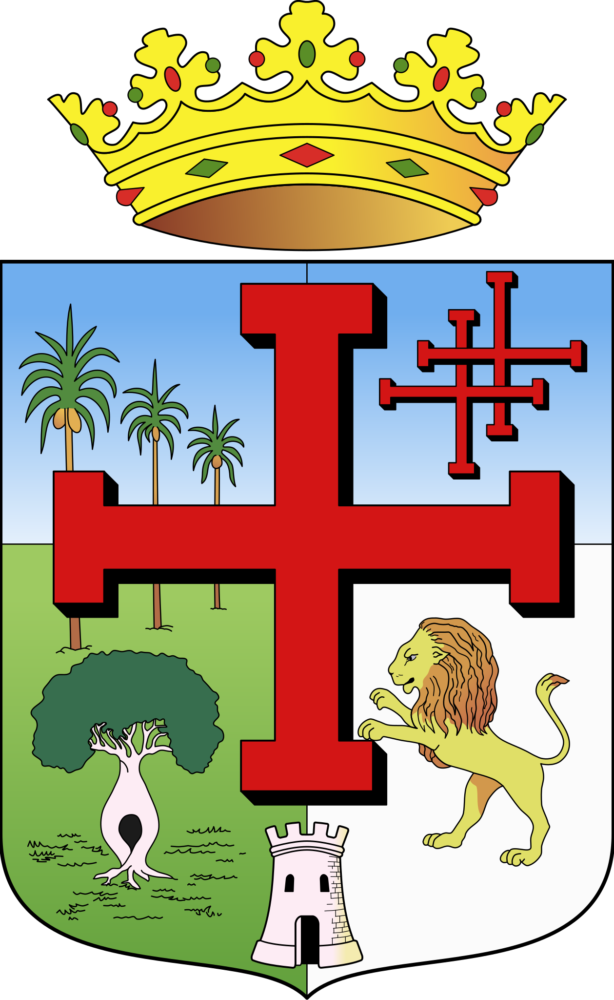

|  | Carnaval cruceño: Aunque el Carnaval se celebra en toda Bolivia, en Santa Cruz tiene sus propias particularidades, con danzas como el cambá festejando en las calles. |
Bajo el cielo más puro de América, y en la tierra de Ñuflo de Chávez. ¡Libertad! van trinando las aves, de su veste ostentando el primor. |
| "A la sombra de un tajibo": Hace referencia a la tranquilidad y frescura que proporciona la sombra de los tajibos, árboles típicos de la región, y cómo se disfruta esa sensación en momentos de descanso. |
De las flores el mundo galano, su ambrosía perfumada ofreciendo ¡Libertad, Libertad! van diciendo en efluvios de paz y de amor. |
La comida típica: Platillos como el majadito, el locro, el pacumutu, entre otros, son parte de la tradición cruceña. |
| CORO La España grandiosa con hado benigno aquí plantó el signo de la Redención. |
"A Dios rogando y con el mazo dando": Refleja la combinación de fe religiosa y acción determinada que caracteriza a muchos cruceños en la búsqueda de sus objetivos. |